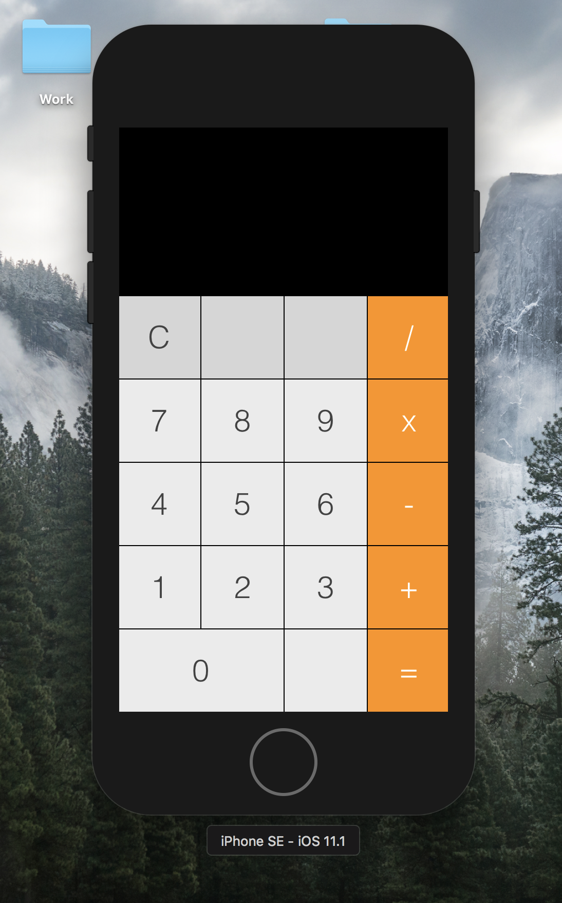

This application is an elementary calculator. It is designed to add, subtract, multiply, and divide two numbers.

@IBAction func numbers(_ sender: UIButton)
{
if performingMath == true
{
label.text = String(sender.tag-1)
numberOnScreen = Double(label.text!)!
performingMath = false
}
else
{
label.text = label.text! + String(sender.tag-1)
numberOnScreen = Double(label.text!)!
}
}
@IBAction func buttons(_ sender: UIButton)
{
if label.text != "" && sender.tag != 11 && sender.tag != 16
{
previousNumber = Double(label.text!)!
if sender.tag == 12 //Divide
{
label.text = "/";
}
else if sender.tag == 13 //Multiply
{
label.text = "x";
}
else if sender.tag == 14 //Minus
{
label.text = "-";
}
else if sender.tag == 15 //Plus
{
label.text = "+";
}
operation = sender.tag
performingMath = true;
}
else if sender.tag == 16
{
if operation == 12
{
label.text = String(previousNumber / numberOnScreen)
}
else if operation == 13
{
label.text = String(previousNumber * numberOnScreen)
}
else if operation == 14
{
label.text = String(previousNumber - numberOnScreen)
}
else if operation == 15
{
label.text = String(previousNumber + numberOnScreen)
}
}
else if sender.tag == 11
{
label.text = ""
previousNumber = 0;
numberOnScreen = 0;
operation = 0;
}
}
override func viewDidLoad() {
super.viewDidLoad()
// Do any additional setup after loading the view, typically from a nib.
}
override func didReceiveMemoryWarning() {
super.didReceiveMemoryWarning()
// Dispose of any resources that can be recreated.
}